One root · twelve languages · clay to couplet
Tracing bayt Across Three Millennia
Following the Semitic word for “house” through tablets, inscriptions, manuscripts and printed texts.
nathaniel-a-miller.github.io/bayt-house
Speaker notes · Title
- Welcome; frame the talk: one root, followed through real objects held in libraries, museums and digital archives.
- Invite the audience to scan the QR code and browse on their own devices.
- Shortcuts: N notes, G overview, T timer, F full screen.
The root and how to read these slides
b–y–t
A single Proto-Semitic noun, *bayt- “house,” survives across the Semitic languages and travels, as a loanword, into Persian and Turkish. Along the way “house” becomes temple, dynasty, household, roof and, finally, a unit of verse.
Root letters
The letters of the root are shown in scarlet in every transliteration.
Meaning tags
house temple dynasty roof verse
On the images
A solid scarlet box marks where the word itself appears. A dashed box marks only the inscribed area when the word is not legible at that resolution.
Getting around
← → or swipe · G overview · tap images to zoom · every slide has its own link.
Speaker notes · The root
- Proto-Semitic *bayt- (Wiktionary etymologies for Ge'ez, Amharic and Maltese all point to it).
- Preview the semantic journey: house → temple / palace / dynasty → household → roof → verse.
- Librarian angle: every slide pairs an object with the catalogue or database record that makes it findable.
A map of the evidence
Tap a point to jump to its slide.Speaker notes · Map
- Points are approximate, plotted by the presenter, not taken from the source records. al-ʿĪsāwī in particular is placed only roughly in Rif Dimašq.
- Red = where an object was found or copied; gray = language areas where only dictionary evidence is shown.
- Today the objects sit in Paris, Aleppo, Jerusalem, Washington and in situ in Syria and Yemen: a good moment to talk about dispersed collections and digital reunification.
The Stele of Hammurabi, law 21
Old Babylonian (ca. 1900–1600 BC per CDLI)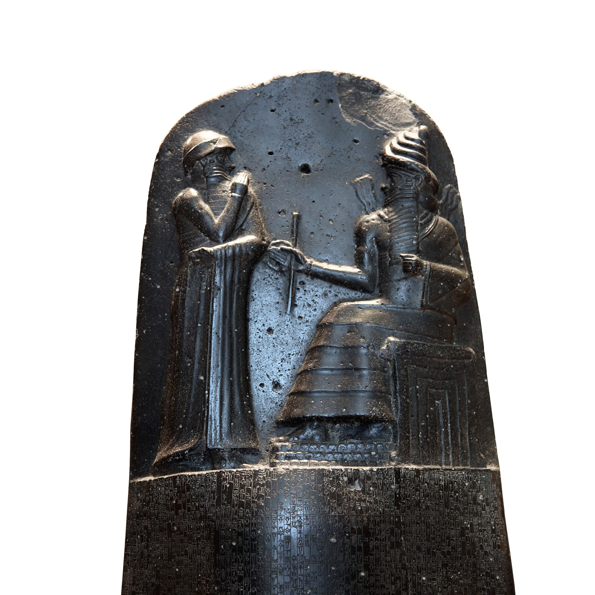
The law is on the face of the stele (CDLI column 9). Individual signs are not legible at this resolution, so no box is drawn.
The word, typeset
bi-tam, Unicode cuneiform signs BI + UD (read tam), set in type for clarity. This is not an image from the stele.
bītam
accusative of bītu, “house”
Transliteration (CDLI, col. 9, lines 14–16)
šum-ma a-wi-lum / bi-tam / ip-lu-uš
šumma awīlum bītam ipluš
Translation
“If a man broke into a house …” (presenter's working translation)
Object: stele, found at Susa (CDLI provenience) · Louvre, Sb 8 · CDLI P249253
Photo: Rama, CC BY-SA 3.0 FR, via Wikimedia Commons. Text: CDLI.
Speaker notes · Akkadian
- Syllabic spelling bi-tam, not the usual logogram É: a rare chance to see the Semitic word spelled out.
- Other spellings on the same stele: pa-qi2-id bi-tim (prologue), a-na bi-it (law 9), i-na bi-ti-šu (laws 16, 32).
- Oracc RINAP glossary: bītu, 754 instances, 97% “house,” also “temple.”
- Caveat: the translation is mine; check against Roth before quoting. CDLI line numbers may differ from printed editions. The photo shows the whole stele, not law 21.
The Kirta epic, KTU 1.14
Clay tablet from Ugarit (Ras Shamra), scribe Ilimilku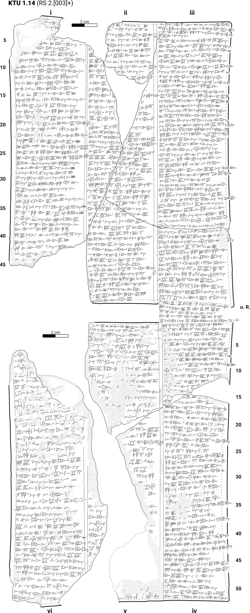
Column iiiDashed box: column iii, where line 38 falls. The exact line is not marked.
The word, typeset
b-bt-y, “in my house,” in Unicode Ugaritic letters (left to right). Set in type, not cropped from the drawing.
bt
bêtu, “house”; here bi bêtiya, “in my house”
Transliteration (EUPT, col. iii, line 38)
pd . in . bbty . ttn
pa dā ˀêna bi bêtiya tâtin
Translation
“Vielmehr gib, was in meinem Haus fehlt.” (EUPT)
“Rather, give what is lacking in my house.” (English from EUPT's German)
Object: clay tablet, 22 × 17 cm · National Museum of Aleppo, M 8218 = A 2750 (AO 17.190) · RS 2.[003]+
Drawing: Noah Kröll / EUPT (Edition des ugaritischen poetischen Textkorpus), CC BY-SA 4.0.
Speaker notes · Ugaritic
- King Kirta has lost his family; in a dream ʾIlu tells him to win the princess Ḥurriya. “Give me what is lacking in my house” is his demand.
- Same tablet: ii 43 yḥd . bth . sgr (“the only one left shall shut his house”), iv 40 hm . ḥry . bty (“if I may take Ḥurriya into my house”).
- EUPT marks its text as Draft 3.2. Photos exist on InscriptiFact (registration required).
Sarcophagus of Eshmunazar II, king of Sidon
Achaemenid period, ca. 525–475 BC (Louvre)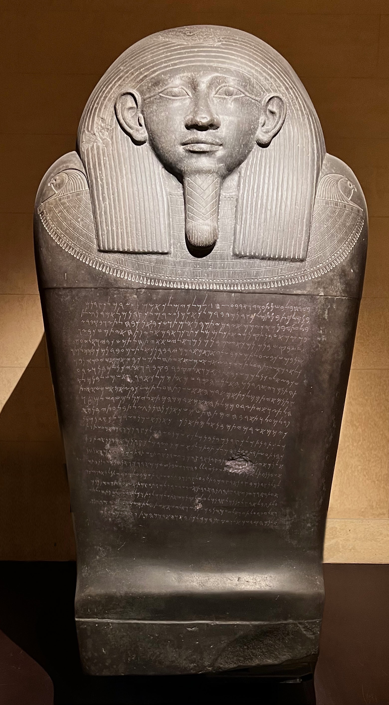
22-line inscriptionDashed box: the lid inscription. The word appears twice in line 18; letters are not legible at this resolution.
The phrase, typeset
bt lbʿl, “a temple for Baal,” in Unicode Phoenician (right to left). Set in type, not cropped from the photo.
𐤁𐤕
bīt, “house”; with a god's name, “temple”
Text (line 18)
𐤁𐤕 𐤋𐤁𐤏𐤋 𐤑𐤃𐤍 𐤅𐤁𐤕 𐤋𐤏𐤔𐤕𐤓𐤕
bt lbʿl ṣdn wbt lʿštrt
bīt labaʿl ṣīdōn webīt laʿaštart
Translation
“…a temple for Baal of Sidon, and a temple for Ashtart, the Name of Baal.”
Louvre (tr. Bordreuil & Gubel): “le temple pour le Ba'al de Sidon et le temple pour Ashtart-nom-de-Ba'al”
Object: basalt (amphibolite) sarcophagus, H. 256 cm, found 1855 near Sidon · Louvre, AO 4806 · KAI 14
Photo: Onceinawhile, CC BY-SA 4.0, via Wikimedia Commons.
Speaker notes · Phoenician
- King and queen-mother list the temples they built: for Ashtart, for Eshmun, for Baal of Sidon.
- Watch out: line 15 has bt mlk = bat “daughter (of the king),” a different word with the same consonants.
- Caveat: the letter-by-letter Phoenician text is from Wikipedia's table (citing Gzella 2011, Amadasi Guzzo 2019); confirm against KAI 14 before printing.
The Tel Dan stele: “House of David”
Old Aramaic, 9th century BCE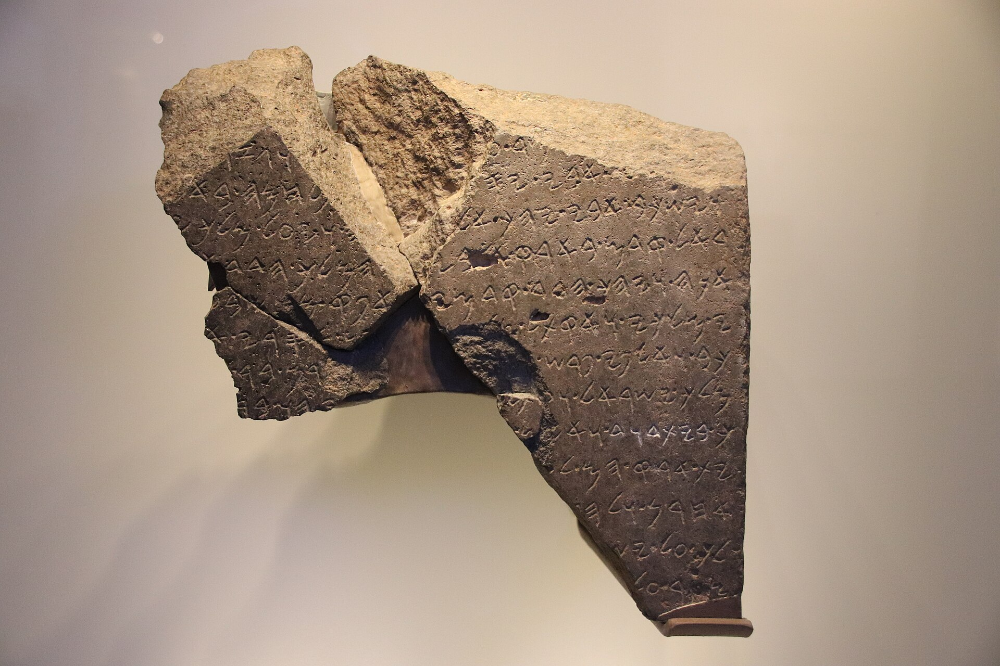
Zoom: where the word appears
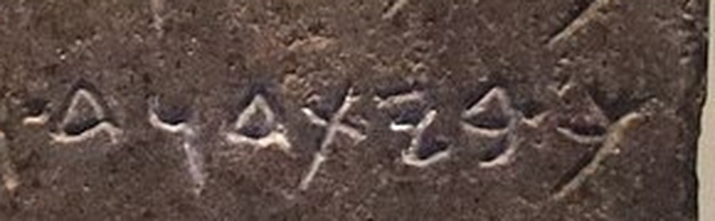
Read right to left: b-y-t-d-w-d, with ml]k just before it. This is the line chalked white in the museum display.
𐤁𐤉𐤕𐤃𐤅𐤃
bytdwd, “House of David,” written as one word
Transliteration (CAL, “TDanStel 9”)
ml]k | bytdwd
Translation
“King of the Davidic dynasty” (CAL)
Later Aramaic: Syriac
ܒܝܬܐ
baytā, “house”; CAL also lists the Syriac sense “strophe; section of a literary work”
Object: fragmentary basalt stele, found at Tel Dan 1993–94 · Israel Museum, Jerusalem (Israel Antiquities Authority collection)
Photo: Gary Todd, CC0, via Wikimedia Commons. Lexicon: Comprehensive Aramaic Lexicon.
Speaker notes · Aramaic
- The earliest mention of the House of David outside the Hebrew Bible; an Aramaean king (usually identified as Hazael) boasts of victory.
- “House” = dynasty. CAL's other senses: household, family, school, temple, palace and, in Syriac, a strophe of a poem, which anticipates Arabic and Persian bayt.
- Caveat: some scholars have questioned the reading because there is no word divider. IAA accession numbers could not be verified from a museum page.
The Great Isaiah Scroll, Isaiah 56:7
Qumran Cave 1, ca. 125 BCE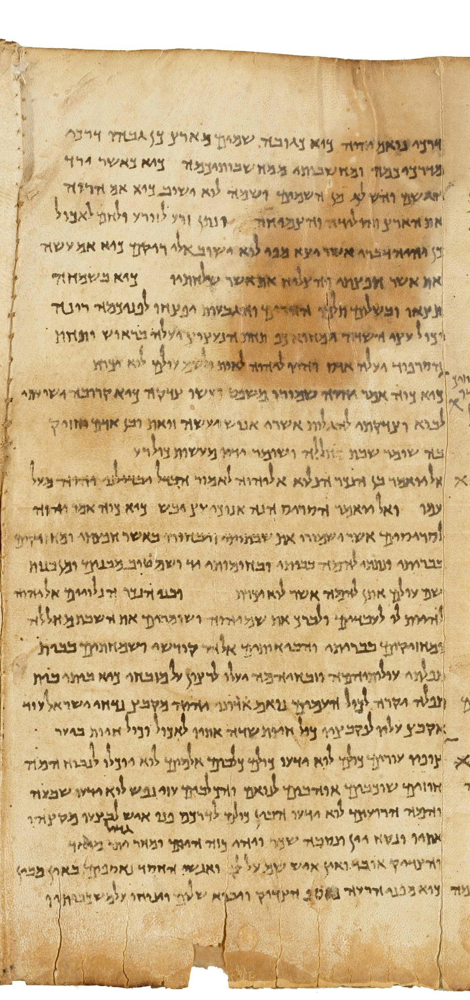
Zoom: where the word appears
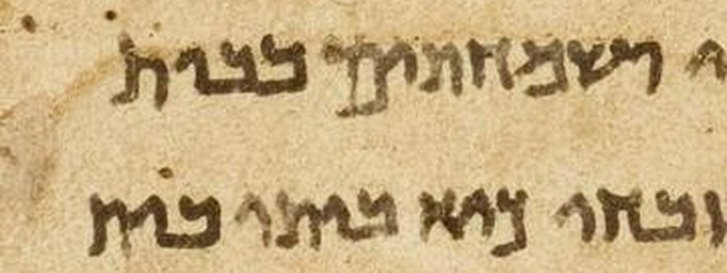
Line ends (read right to left): …ושמחתים בבית / …כיא ביתי בית, “in the house of [my prayer] … for my house, a house [of prayer]”. Presenter's reading of the scroll.
בֵּית
bêt, “house (of)”; bêtî, “my house”
Text (Isaiah 56:7, Masoretic wording)
כִּי בֵיתִי בֵּית־תְּפִלָּה יִקָּרֵא לְכׇל־הָעַמִּים
kî bêtî bêt-təpillâ yiqqārēʾ lə-kol-hāʿammîm
Translation
“For My House shall be called a house of prayer for all peoples.” (JPS, via Sefaria)
Object: parchment scroll, 734 cm, 54 columns · Israel Museum, Jerusalem (Shrine of the Book) · 1QIsaa, column 46 (Isa 55:8–57:2)
Image: Google Art Project, public domain, via Wikimedia Commons (column cropped). Hebrew: Sefaria, Miqra according to the Masorah (CC BY-SA).
Speaker notes · Hebrew
- Column 46 holds Isaiah 55:8–57:2, per the Israel Museum's own viewer data.
- The scroll spells כיא (with aleph) where the Masoretic text has כי: a small example of the scroll's 2,600+ variants.
- Caveat: the Hebrew text in the panel is the Masoretic wording; the scroll's line readings in the inset are my own reading of the image. Check against the Ulrich & Flint edition.
A Safaitic rock inscription: “This house belongs to Bnkf”
Al-ʿĪsāwī, southern Syria · recorded 1904–05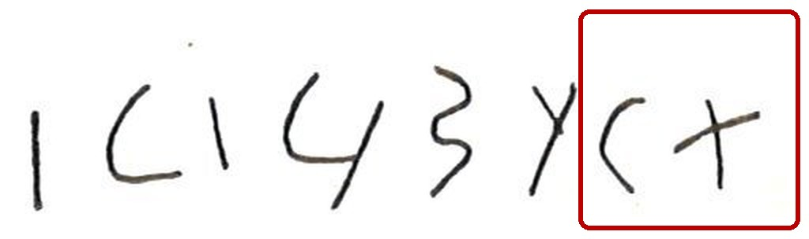
Reading the copy
This inscription runs left to right: l · b n k f · h · b t. The scarlet box marks bt, “house,” after the article h-.
𐪀𐪈𐪉
h-bt, “the house” (Unicode Old North Arabian, typeset)
Transliteration (OCIANA)
l bnkf h- bt
Translation
“This house [belongs] to Bnkf” (OCIANA)
Object: rock inscription, still in situ at al-ʿĪsāwī, Rif Dimašq, Syria · LP 949 (Littmann 1943) · OCIANA record 2744
Hand copy after Littmann, Safaïtic Inscriptions (1943), no. 949, via OCIANA; used under fair use.
Speaker notes · Ancient North Arabian
- OCIANA (Online Corpus of the Inscriptions of Ancient North Arabia) is hosted here at Ohio State, in NESA; ed. A. Al-Jallad and M.C.A. Macdonald.
- OCIANA gives no date for this inscription; it is still in situ.
- Same formula: ISB 20 (Jordan), “This house belongs to Ḍls¹ son of ʿlk,” though there bt is an editorial correction.
- Dadanitic alternative with a regnal date: AH 197, “provided sufficient in their house.”
“He built the temple of Almaqah”: CIH 366 a
Early Sabaic royal building text · Ṣirwāḥ, Yemen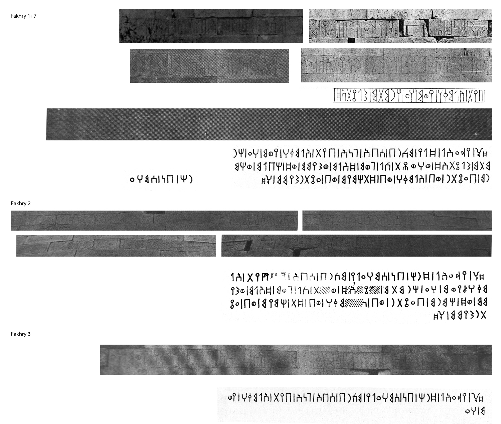
Zoom: where the word appears
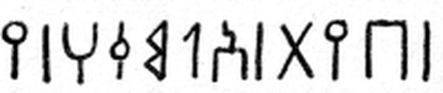
From the hand copy of the first wall copy, read right to left: b-y-t | ʾ-l-m-q-h, “temple of Almaqah.”
𐩨𐩺𐩩 𐩱𐩡𐩣𐩤𐩠
byt ʾlmqh, “the temple (house) of Almaqah”
Transliteration (DASI, line 1)
Ydʿʾl Ḏrḥ bn S¹mhʿly mkrb S¹bʾ gnʾ byt ʾlmqh …
Translation
“Ydʿʾl Ḏrḥ son of S¹mhʿly, mukarrib of Sabaʾ, built the temple of ʾlmqh …” (DASI / CSAI)
Object: inscription on the stone walls of the temple of Almaqah, in situ at Ṣirwāḥ · CIH 366 a (DASI 1045) · Early Sabaic, period A
Image after Fakhry, An Archaeological Journey to Yemen (March–May 1947), 3 vols. (Cairo, 1952), via DASI; used under fair use. Text: DASI, CC BY 4.0.
Speaker notes · Sabaic
- The same text was carved several times into the walls of the Almaqah temple at Ṣirwāḥ; DASI's text is a composite (Wissmann's edition).
- DASI word index: byt occurs 336 times in Sabaic, plus Minaic, Qatabanic and Ḥaḍramitic.
- Bridge to Ethiopia: RIÉ 1, a Sabaic inscription found in Ethiopia, also has byt.
“The Lord of this House”: Qurʾān 106:3
Kufic Qurʾān fragment on parchment, est. 700–800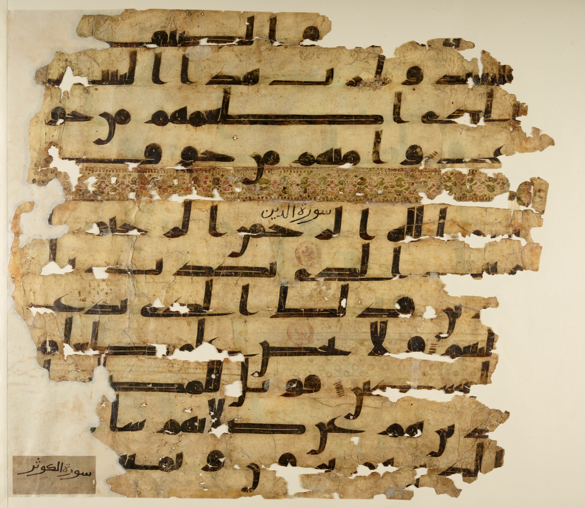
1 · al-ba… 2 · …ytZoom: the word breaks across two lines
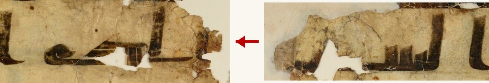
Right: the end of line 2 (الب…). Left: the start of line 3 (…يت الذي). Kufic scribes freely split words at line ends.
ٱلۡبَيۡت
al-bayt, “the House”
Text (Cairo 1924 reference text)
فَلۡيَعۡبُدُوا۟ رَبَّ هَٰذَا ٱلۡبَيۡتِ
fa-l-yaʿbudū rabba hādhā l-bayti
Translation
“So let them worship the Lord of this House.” (Pickthall, via Corpus Coranicum)
Object: parchment, 12 lines, provenance al-Fusṭāṭ · BnF, Arabe 324 (c), fol. 46v (Q 106:2–107:7)
Source gallica.bnf.fr / Bibliothèque nationale de France.
Speaker notes · Arabic
- Sura 106 (Quraysh): the Meccan caravans and “the Lord of this House,” the Kaʿba.
- The vocalized text is the 1924 Cairo edition; the manuscript itself shows only the consonantal skeleton (rasm), unpointed.
- Sura headings (سورة الدين, سورة الكوثر) were added later in a different hand.
- Corpus Coranicum indexes 65 manuscripts containing this verse: a great example of verse-level discovery across collections.
- Next: in Arabic poetics, bayt also names the line of verse, the sense that travels to Persian and Turkish.
ቤት bēt: house and verse
Dictionary evidence (object to come)No digitized manuscript yet: the Beta maṣāḥǝft database was unreachable during research.
Geʿez
ቤት bēt, pl. አብያት ʾabyāt, “house”
Construct ቤተ: ቤተ ክርስቲያን beta krəstiyān, “church” (“house of Christians”)
Amharic
ቤት bet
“house; room; family; generation; stall; verse (of poetry); box, sheath; (grammar) person”
Source: Wiktionary, citing Dillmann, Lexicon Linguae Aethiopicae (Geʿez), Kane and Leslau 2000 (Amharic).
Speaker notes · Geʿez / Amharic
- Amharic ቤት independently develops the meaning “verse of poetry,” the same leap as Arabic and Persian bayt.
- To add: a digitized Ethiopian Gospel book open at John 14:2 (“in my Father's house”), e.g. from vHMML or Princeton.
- Wiktionary is a starting point; cite Dillmann (1865, public domain), Kane or Leslau directly.
bejt: the house becomes the roof
Dictionary evidenceMaltese, the only Semitic language written in the Latin alphabet.
Form
bejt (m.), pl. bjut · root b-j-t
Meaning
“roof”; obsolete “house” (the everyday word for house is dar)
Source: Wiktionary (Maltese); for citation use Ġabra (University of Malta) or Aquilina's Maltese–English Dictionary.
Speaker notes · Maltese
- Semantic narrowing: “house” → the flat roof of the house; “house” itself is now dar.
- Derived expression in Wiktionary: bejt ma' bejt.
- Possible image to add: an early public-domain Maltese dictionary page (e.g. Vassalli 1796 or Falzon 1845 on archive.org), or a Commons photo of Maltese rooftops.
The bayt as a unit of verse: Ḥāfiẓ, Dīvān
Copied Dhū al-Qaʿdah 923 AH / Nov.–Dec. 1517 CE, Iran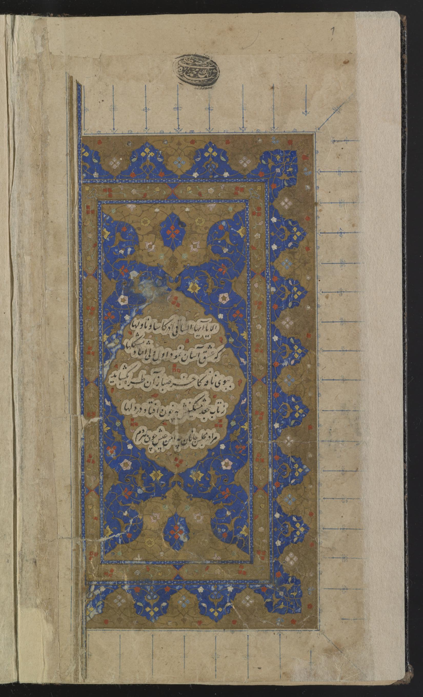
Zoom: one bayt (two half-lines)
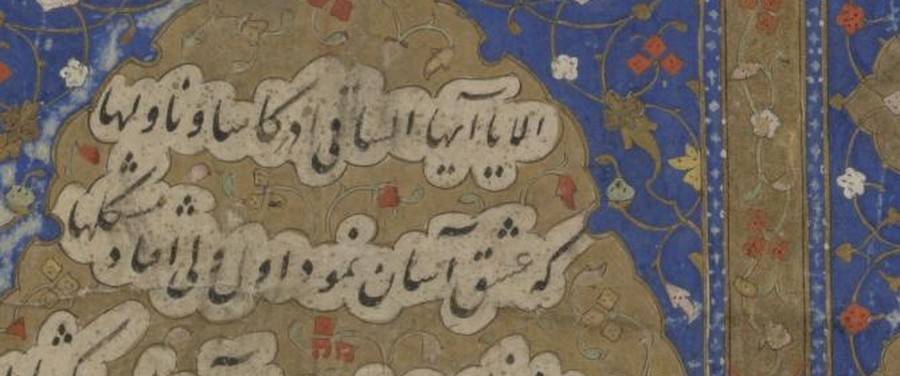
The opening couplet of the first ghazal: two miṣrāʿ (half-lines) make one bayt.
بیت
bayt, pl. ابیات abyāt: “couplet, distich” (from Arabic)
The first bayt on this page (presenter's reading)
الا یا ایها الساقی ادر کأسا و ناولها
که عشق آسان نمود اول ولی افتاد مشکلها
alā yā ayyuhā s-sāqī adir kaʾsan wa-nāwilhā / ki ʿishq āsān namūd avval valī uftād mushkil-hā
Translation
“O cupbearer, pass the cup around and offer it, / for love seemed easy at first, but then came difficulties.” (presenter's working translation)
Object: paper, 162 leaves, nastaʿlīq, scribe Munʿim al-Dīn al-Awḥadī · Library of Congress, Persian MS M 25 (PK6465 .D5 1517)
Library of Congress, African and Middle East Division, Near East Section Persian Manuscript Collection. Public domain / no known restrictions.
Speaker notes · Persian
- Here bayt is not a word on the page but the page's unit: each line of the layout is one bayt of two half-lines.
- Persian keeps both senses (Wiktionary): bayt “couplet, distich” (pl. abyāt) and, chiefly in compounds, “house, building, temple” (pl. buyūt).
- Caveat: the reading and translation of the couplet are mine; the manuscript's foliation (1a or 1b) is unconfirmed (image 6 in the LoC viewer).
beyit: the couplet in Ottoman and modern Turkish
Dictionary evidence (object to come)بیت
Ottoman beyt → modern Turkish beyit
Form
beyit, acc. beyti, pl. beyitler · Ottoman بیت beyt
Meaning
“a verse of classical Arabic, Persian, Turkic or Urdu poetry (similar to couplet)”
Related forms: kaside, gazel, mesnevi, müstezat, muhammes
Source: Wiktionary (Turkish). Etymology: Ottoman بیت, from Arabic بَيْت.
Speaker notes · Turkish
- Modern Turkish adds a vowel (beyt → beyit) but the suffixed forms keep the old shape: beyti, “its couplet.”
- To add: an Ottoman divan or prosody (aruz) manual where a rubric reads بیت; Harvard, Princeton or Gallica often have public-domain scans.
From house to verse
house
temple
dynasty
roof
verse
The same three consonants house a family, a god, a dynasty and a poem, and the objects that carry them now live in libraries, museums and open databases around the world.
Speaker notes · Summary
- The verse sense is attested independently in Syriac (CAL “strophe”), Arabic (and from it Persian and Turkish) and Amharic.
- Close on access: CDLI, Oracc, EUPT, CAL, OCIANA (OSU), DASI, Corpus Coranicum, Gallica and LoC made this whole tour possible, and each has different licensing.
- Invite questions; press G to jump back to any object.
Sources and image credits
Akkadian. Photo: Rama, “Code of Hammurabi-Sb 8-IMG 7755-white,” CC BY-SA 3.0 FR, Wikimedia Commons. Text: CDLI P249253. Glossary: Oracc RINAP (CC BY-SA 3.0).
Ugaritic. Drawing and text: KTU 1.14, Edition des ugaritischen poetischen Textkorpus (EUPT), Version Draft 3.2, ed. C. Steinberger et al.; copy by Noah Kröll. CC BY-SA 4.0.
Phoenician. Photo: Onceinawhile, “Eshmunazar II sarcophagus (cleaned up),” CC BY-SA 4.0, Wikimedia Commons. Object data and French translation: Musée du Louvre, AO 4806. Text table: Wikipedia, citing Gzella 2011 and Amadasi Guzzo 2019.
Aramaic. Photo: Gary Todd, CC0, Wikimedia Commons. Lexicon: Comprehensive Aramaic Lexicon (cal.huc.edu), entry by, bytˀ.
Hebrew. Image: “The Great Isaiah Scroll MS A (1QIsa) – Google Art Project,” public domain, Wikimedia Commons (column 46 cropped). Column data: Israel Museum Digital Dead Sea Scrolls. Text: Sefaria, Miqra according to the Masorah (CC BY-SA); JPS translation (CC BY-NC).
Ancient North Arabian. Hand copy after E. Littmann, Safaïtic Inscriptions (Leiden, 1943), no. 949, via OCIANA, ed. A. Al-Jallad and M.C.A. Macdonald; fair use.
Sabaic. Image after A. Fakhry, An Archaeological Journey to Yemen (March–May 1947), 3 vols. (Cairo: Government Press, 1952), via DASI; fair use. Text and translation: DASI, CC BY 4.0 (doi:10.82194/dasi-epi-1045).
Arabic. Source gallica.bnf.fr / Bibliothèque nationale de France, Arabe 324 (c), fol. 46v. Text and translation: Corpus Coranicum (BBAW); Pickthall 1930.
Geʿez, Maltese, Turkish. Wiktionary entries ቤት, bejt and beyit (CC BY-SA), citing Dillmann, Kane and Leslau.
Persian. Library of Congress, Persian manuscript M 25, Ḥāfiẓ, Dīvān (1517). Public domain / no known restrictions.
Map. Leaflet; tiles © OpenStreetMap contributors. Points plotted approximately by the presenter.
Research notes. Full notes, caveats and rights statements: bayt_examples.md.
Speaker notes · Sources
- Images marked “fair use” (Safaitic, Sabaic) are reproduced from published scholarship for non-commercial teaching.